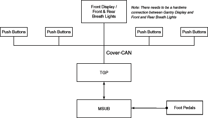

Operating Documentation
Direction 5181178-800, Rev# 16
BrightSpeed Select Service Methods Gen
Module Version 1.0, Version Date 2/16/07
Operating Documentation |
The two FPGAs on the TGP board perform major functions of the board. These FPGAs are named LSCOM_CTRL and TRIG, respectively.
This FPGA controls the LSCOM function. The TGP processor communicates with the ORP board via this LSCOM_CTRL FPGA and slip rings. It also transmits the EXP_ENBL hardware signal.
This FPGA has the following functions:
Chip selection
Store of Revision No.
A/D conversion / Buffer circuits
Bounce elimination
Trigger sequence function
Output register
Status register
Interrupt control
Pulse generator for motor driver (not used)
Encoder pulse frequency divider (Axial, Cradle)
Some of the functions above are described in the sections below.
The FPGA stores the part No., variation No., and revision No. of the TGP board.
An A/D converter on the board converts the following analog signals being output from the FPGA device of the MSUB board:
Table position voltage (not used)
Cradle position voltage (not used)
Tilt position voltage (not used)
MSUB miscellaneous analog voltages
Power (24V) voltage
Power (12V) voltage
Power (5V) voltage
The exposure command signal is activated when the enable bit has been activated and the selected synchronization signal is activated. The synchronization signal is either of the following two: MSUB_SYNC (either Axial Sync or Table Sync) or Firmware generated signal. Axial Sync is used for all types of axial scans, and Table Sync is used for scout scans. The firmware generated sync signal is used for statics and diagnostic scans.
The exposure command signal goes inactive when either:
The trigger counter expires (by counting either of the synchronization signals mentioned above), or; Enable bit is made inactive, or; The watchdog timer goes out.
The TGP board has two kinds of watchdog timer function:
Internal watchdog: located inside the CPU
External watchdog: located outside the CPU
The internal watchdog deters uncontrolled run of software, if it took place.
The external watchdog must be run to enable the gantry axial drive and x-ray exposure.
The Gantry user Interface consists of a Gantry display, Gantry push buttons, and the TGP board. Each of these components incorporate a microprocessor. Illustration 1 shows the overall design of this control.
Illustration 1: Gantry User Interface Design Block Diagram

| NOTE: | For a scalable pdf version of this illustration, click on the icon below: |
Media File 1: Gantry User Interface Design Block Diagram

These components are connected by a CAN (Cover-CAN), including the following nodes, in the following quantities:
TGP (1)
Control panel push buttons (4)
Display (1)
The CAN port operates at 250K Baud Rate.
Several functions are common between the three controllers. These functions are:
Self Tests
Processor Initialization
Communication
Downloading Code
Firmware Revision and Board Revision Reporting
FIRMWARE AND BOARD REVISION
Each microprocessor is able to report its firmware number, firmware revision, board number, board revision, and board serial number. The firmware number and revision number are embedded in the firmware code.
The Ethernet Controller chip controls the 10Base-T connection with the console.
The TGP board has two CAN channels: One is Cover-CAN, used for interfacing the gantry push buttons and displays. The other is not used.
The Cover-CAN network supports four (4) control panels: two (2) each on front and rear gantry covers. The Cover-CAN requires the gantry display and one (1) control panel for successful initialization. Upon power-up the TGP tests communications to the gantry display and controllers. Faults are reported as node failures.
LSCOM is the communication way between TGP and ORP via slip rings.
It uses three signals: SER_SREF (reference signal), SER_OUTBOUND (transmit signal), and SER_INBOUND (receive signal).
The LSCOM interface needs an isolated +/- 5Vdc bipolar power supply to power the driver/receiver circuits. In addition, optical isolation is maintained between the slip rings and the ORP logic circuits.
The TGP board outputs EXP_ENBL signal to the ORP board via a slip ring for interrupting EXPCMD signal to JEDI.
The TGP provides an A/D interface for monitoring the on-board regulated power supplies: +24V / +12V / +5V.
The TGP CPU receives signals from thermal sensors: one (LM35DM) is located on the board itself, and the other (LM35DP) is located outside the board.
Temperature measurement range: 5 - 65.0 degrees C
Accuracy: +/- 1.0 degree C
The signals are converted to digital data by the CPU built-in A/D converter.
Table 1: Push Switches
| Switch | Description |
| TGP_RESET | |
| TEST_SW1 | |
| VHIST_CLR |
Table 2: LSCOM Related
| Name | Description |
| Violation | Indicates that the current word is not valid. |
| VHist | Indicates that a violation has occurred. |
| Link Disconnect | Indicates that the serial input is not connected. |
| RX Busy | Indicates that the receive state machine is busy. |
| TX Busy | Indicates that the transmit state machine is busy. |
| Reset | The board is currently in reset (Used for troubleshooting the hard reset across the slip ring). |
| Rhist | The board has been reset (Used for troubleshooting the hard reset across the slip ring). |
Table 3: CPU Related
| Name | Description |
| Run | Blinks at the time of program operation. |
| Error | The light is switched on at the time of error generating, and is put out at the time of an error dissolution. |
| Error Hist | Indicates that an Error has occurred. |
| DS9-12, 16 | (Not defined) |
Table 4: Ethernet Related
| Name | Description |
| TX | Transmit status. |
| RX | Receive status. |
| LINK | State of the 10BASE-T link integrity. |
| BS | Access to I/O space of LAN91C96. |
| TPOT_CNTR | Indicates TILT POT is around center. (not used) |
Table 5: Other LED
| Name | Description |
| EXP_EN_RB | Exposure enable line status. |
Table 6: Test Pins
| TP# | Name | Description |
| 1 | P24_IN | +24V (Source) |
| 2 | RTN_P24_IN | +24V return |
| 3 | P12_IN | +12V |
| 4 | N12_IN | -12V |
| 5 | AGND_IN | +12V return |
| 6 | P5_IN | +5V |
| 7 | RTN_P5_IN | +5V return |
| 8 | P5 | +5V for logic |
| 9 | P3_3 | +3.3V for Logic |
| 10 | P2_5 | +2.5V for TRIGGER FPGA |
| 11 | P2_5B | +2.5V for LSCOM FPGA |
| 12 | P1_9 | +1.9V |
| 13 | LGND | Logic Ground |
| 14 | LGND | Logic Ground |
| 15 | LGND | Logic Ground |
| 16 | +5V_ISO | +5V for LSCOM |
| 17 | -5V_ISO | -5V for LSCOM |
| 18 | ISO_GND | LSCOM Ground |
| 19 | +12V_ANALOG | +12V for analog circuit |
| 20 | -12V_ANALOG | -12V for analog circuit |
| 21 | GND_ANALOG | Analog Ground (for external A/D circuit) |
| 22 | PB_12V | +12V for SW/DISP |
| 23 | PB_GND | +12V Ground for SW/DISP |
| 24 | ON_TEMP | On board Temperature signal |
| 25 | REMO_TEMP | Remote Temperature signal (TEMP_RTN) |
| 26 | EXP_RING | exposure signal monitoring |
| 27 | PDU_24 | PDU_24(EXPEBL_TO_TGP) |
| 28 | EXP_EN | EXP_EN (EXPEBL_TO_SUB) |
| 29 | M_TRIG | MSUB_TRIG |
| 30 | M_SYNC | MSUB_SYNC |
| 31 | DAS_TRIG | DAS Trigger |
| 32 | EXP_CMD | Exposure command |
| 33 | ERROR_INJECT | Error inject signal |
| 34 | DRIVES_ENBL | DRIVES ENABLE |
| 35 | V_REF | Voltage reference for external A/D circuit |
| 36 | HOMEFLAG | HOME FLAG |
| 37 | CINPLS | Cradle In pulse (Debug Only) |
| 38 | M_ALOG_H | MSUB_ANALOG_H |
| 39 | M_ALOG_L | MSUB_ANALOG_L |